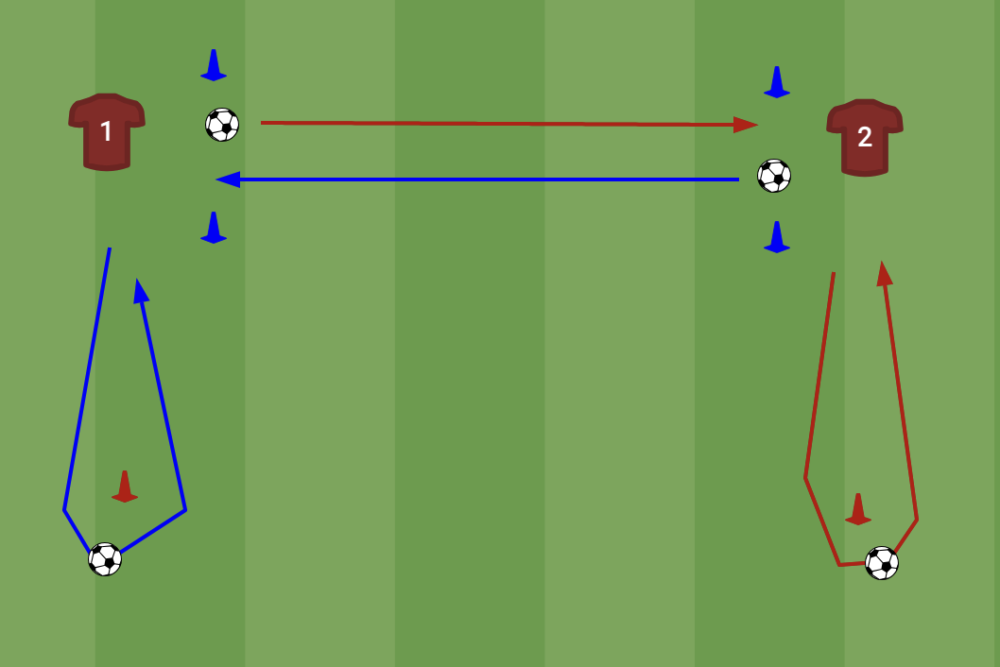
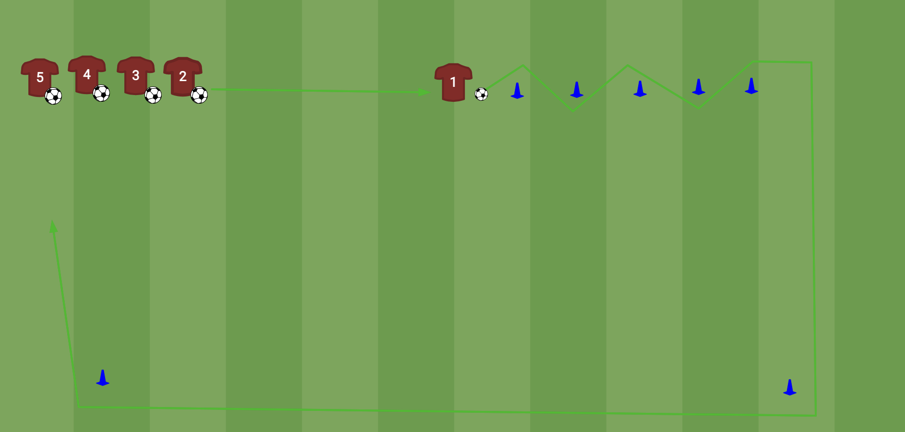

Vrijdag 21 augustus 2026 · veld vanaf 18:00 · officieel 18:15–19:30
| Tijd | Wat | Wie |
|---|---|---|
| 18:00–18:15 | Inloop + peilenWie er is pakt een bal, vrij trappen. Wij lopen rond en vragen per speler: waar speelde je, waar wil je spelen, keeper ja/nee. Zo is het binnendruppelen al gebeurd vóór de officiële start. | samen |
| 18:15–18:20 | Kort samenkomenWelkom, voorstellen, in het kort wat we gaan doen. | Tjaco |
| 18:20–18:28 | Warming-up zonder balLoop- en rekvormen zoals voor een wedstrijd. Voordoen, en erbij zeggen dat we dit later door een speler laten leiden. | Tjaco |
| 18:28–18:40 | Tikkertje met balAfgebakend vak, 2 tikkers, getikt = wisselen. Hoog tempo, lol, en je ziet meteen wie behendig is. | samen |
| 18:40–18:45 | Uitleg + splitsenThema aannemen & meenemen kort uitleggen, dan groep A en groep B. | Tjaco |
| 18:45–19:05 | Technisch blok — 2 groepenGroep A: aannemen & meenemen. Groep B: slalom pass-en-go. Halverwege wisselen. Beide oefeningen staan op pagina 2. | A: Tjaco B: Michel |
| 19:05–19:26 | Partij op kleine veldjes4v4 / 5v5 met kleine goaltjes, dus geen keepers nodig. Maximale balcontacten, iedereen in het spel. Posities laten wisselen, licht coachen, vooral laten voetballen. | samen |
| 19:26–19:30 | AfsluitenKort rondje "wat vond je leuk", één positief punt, vooruitblik, samen opruimen. | Tjaco |
Technisch blok, 18:45–19:05 · halverwege wisselen we van groep

In tweetallen. Thema: aannemen met richting, de bal niet stilleggen.
Opstelling. Per tweetal 4 pionnen: 2 startpionnen (daarachter staan A en B om vanaf in te spelen) en 2 kap-pionnen, in de aanspeellijn en iets verder naar buiten dan de startpion. In het midden een poortje van blauwe pionnen waar de pass doorheen moet.
Coachpunten. Bal vóór je wegnemen, niet plat aannemen en terugtikken. Actieve aanname, meteen in de looprichting. Gaat het te makkelijk, laat het dan op de andere voet aannemen.

Thema: balcontrole in de slalom, inspelen, dribbelen met richting.
Opstelling. Rij met bal aan één kant, een zigzag-straatje van pionnen om doorheen te slalommen, en twee hoekpionnen ruim opzij voor de terugroute — zo kruisen heen- en terugweg elkaar niet.
Coachpunten. Kleine tikjes in de slalom, bal dichtbij houden. Hoofd omhoog vóór de pass aan het eind. Terugdribbelen is extra balcontact, dus niet slenteren.
Let op: zet twee kortere rijen neer met elk een eigen straatje, niet één lange rij. Met één rij staan er te veel stil en halveer je de balcontacten.